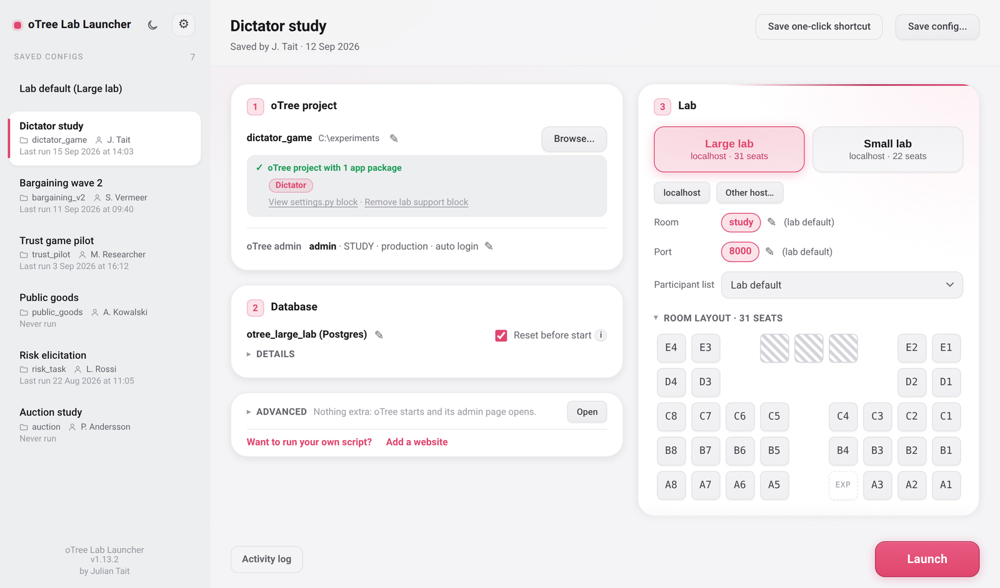
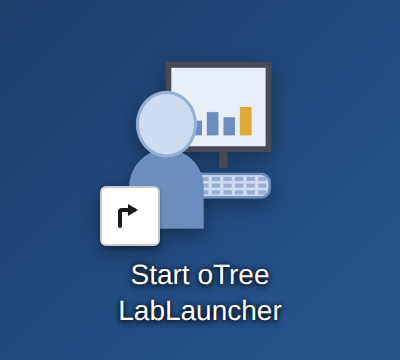
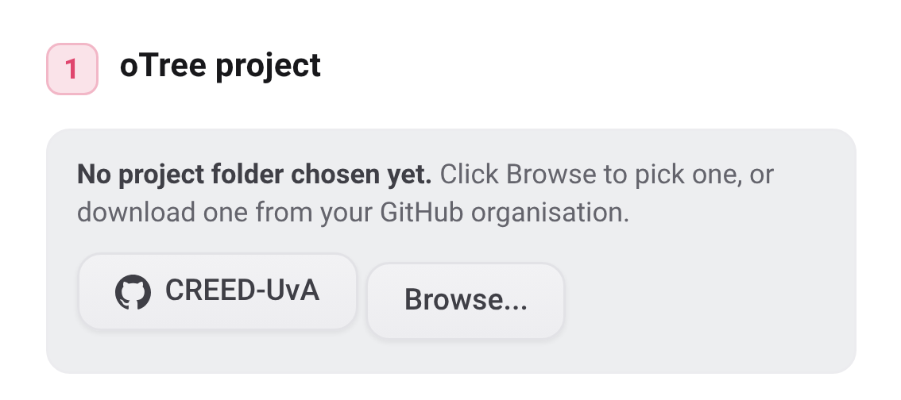
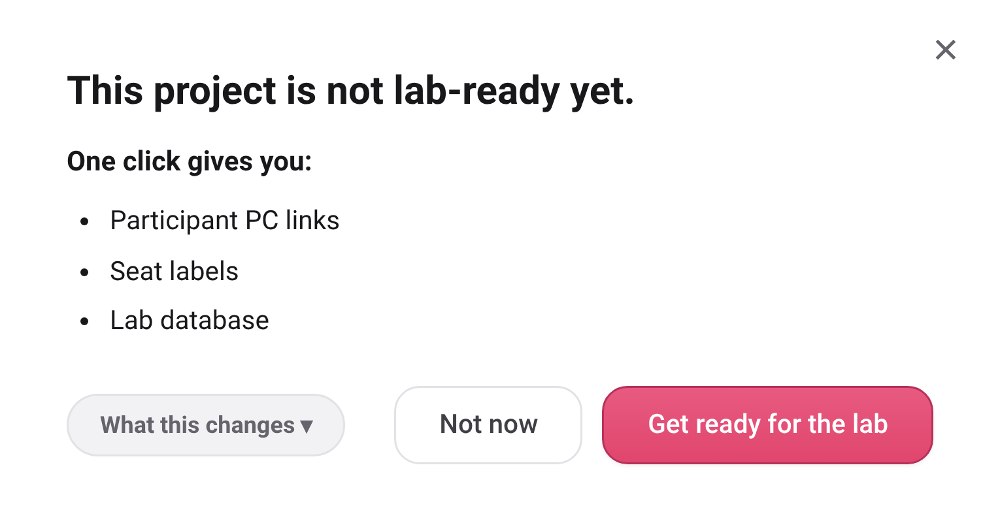

oTree Lab Launcher
GitHubYour lab manager sets it up once, so everyone can use the same default infrastructure. Any future experiment works in just three clicks: point it to the new oTree folder, get it ready for the lab, and launch.
- Database management is handled for you. Use a default or new Postgres database on each run.
- Rooms and participant links are handled for you.
- Use existing lab infrastructure easily. Run your own scripts, open websites and pass settings on launch from the Advanced card.
- Save a config to launch a study in one click. Re-starting a saved study is instant.
- Get studies from GitHub. Clone a study from your lab's GitHub organisation, and pull its updates before you launch.
- Open source and free.

Running in the lab
Put your oTree project on the lab computer, in a desktop folder with your name.
-
Start oTree LabLauncher
Double-click the shortcut on the desktop.

-
Browse
Pick your study folder, or clone a study from your lab's GitHub organisation.

-
Get lab-ready
One click wires up the database, participant links and seat labels.

-
Launch
The server starts and the oTree admin page opens. Check the summary.
-
Join from the participant computers
Open the room link on each seat, then create the session in the oTree admin page.
Optional: save a one-click shortcut to the desktop for next time.
Full details and setup are on GitHub.